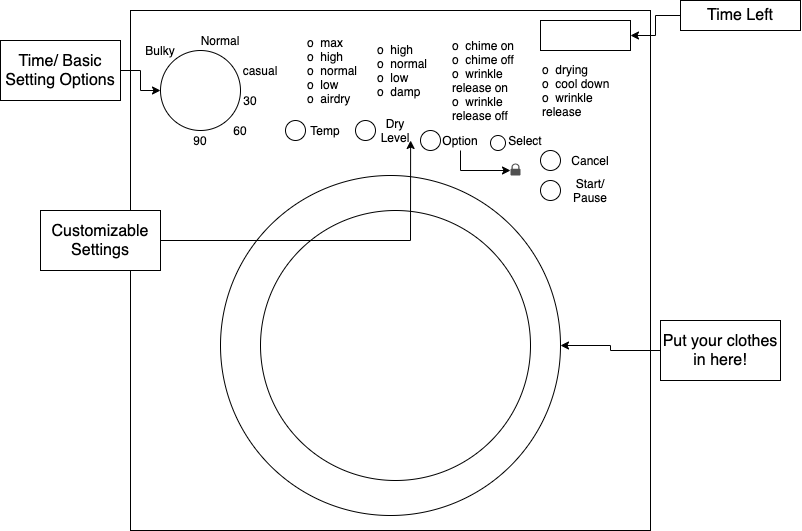

257 Dryer Struggles
Questions
- Do you use the 257 dryers often?
- Are there any buttons/categories that you don’t really know what it means?
- When you first used the dryer were you able to get hold of it easily?
Give me a number from 1-5, 1 being super easy and 5 being clueless. - What are some of the improvements you can make to the dryer?
- What do you think the lock icon is doing?
- Overall, do you think 257 dryers are designed well?
- Are you satisfied with the product of this interface?
- Do you think a 10 year old can use this interface? How about a 70 year old?

From what you see from the sketch, you would expect that you will be able to make all these controls separately but a lot of the times when you select a certain option, the other options get locked. Also some wordings such as “casual”, “bulky”, and “options” are not intuitive and it is hard to figure out what exactly the lock icon is doing.
Observations
- They normally don’t know what “bulky” or “casual” are supposed to mean. Many of them associate “casual” to normal clothes and get confused on how that is different from the normal mode.
- People often get confused which button to choose to control the chime and wrinkle release options. Do you click “option” or “select”?
- They also get confused by the lock icon. What is it supposed to lock? Which button do you have to press to lock? Does it lock you options or does it lock the dryer itself (to prevent kids from opening it)?
- Some of them will not know which settings to put for certain clothes. (ex: What should the temperature be if I want to dry my sweater?) → resort to trial and error
- People often can’t use this dryer at its full potential (ex: they will assume that they can’t put beddings like pillows in the dryer, when they actually can with right settings)
Responses
Question Responses
-
(Q) Do you use the 257 dryers often?
Yes :) (the questions were asked to 257 residents only) -
(Q)Are there any buttons/categories that you don’t really know what it means?
“Casual” “Bulky” -
(Q)When you first used the dryer were you able to get hold of it easily?
Give me a number from 1-5, 1 being super easy and 5 being clueless.
Around 2 or 3 -
(Q) What are some of the improvements you can make to the dryer?
I wish I could have more detailed control on the settings. (ex: time control) / i wish some of their options were more self explanatory (ex: instead of having casual and bulky I wish they had options like “delicates” or “bedding” / I hope I can use the dryer for my knitted clothes and beddings -
(Q) What do you think the lock icon is doing?
Lock the settings (chime and wrinkle release) / lock the dryer so that it can’t be opened -
(Q) Overall, do you think 257 dryers are designed well?
It’s not bad/ Exponentially better than Brown dryers but it can make some improvements -
(Q) Are you satisfied with the product of this interface?
Yes (ex: it messes up my clothes sometimes but it does its job) -
(Q) Do you think a 10 year old can use this interface? How about a 70 year old?
Yes, the directions are quite simple and self-explanatory./ Yes, but they might not be able to set up detailed settings.
Personas

Lazy Larry
Lazy Larry is a typical college student living on his own for the first time. He is used to his mom doing his laundry at home. He is a typical user who doesn’t know how to use the dryer and doesn’t feel motivated to look up instructions.
Interface Problem:Because the basic setting options are vague and limited, he may end up wasting some of his clothes. Including more settings for delicates,
beddings, jackets,...etc that are more straightforward and useful will prevent him from drying his clothes in a wrong setting.
Representation:
Most people living in 257 are college students. Since 257 is a pretty expensive apartment, students living here most likely come from
a privileged household where they don’t have to worry about doing these chores. They are prone to all the rookie mistakes (putting colored
clothes and white clothes in the same cycle) but at the same time they are too lazy or unmotivated to fix those mistakes.

Sensitive Susan
Description:Sensitive Susan enjoys shopping and cares more about her clothes/looks. She is more organized than lazy Larry and is more sensitive to
hygiene/cleanliness. She is the type of user who will look at all the options and buttons that the dryer has.
Interface Problem:
She is the type who would get extremely frustrated by the trial-and-error process. She will not use the basic settings that are in vague
languages. She is also frustrated by how she can’t customize the settings as much as she would like.
Representation:
As mentioned above, 257 will typically have college students from comfortable backgrounds. Sensitive Susan will probably have a few clothes
that are quite expensive and would want to take good care of it. Since she enjoys shopping (like a typical college student) and decorating her
room, she will have different types of clothes that require different dryer settings.
Storyboard
Lazy Larry using 257 Dryer
.png)